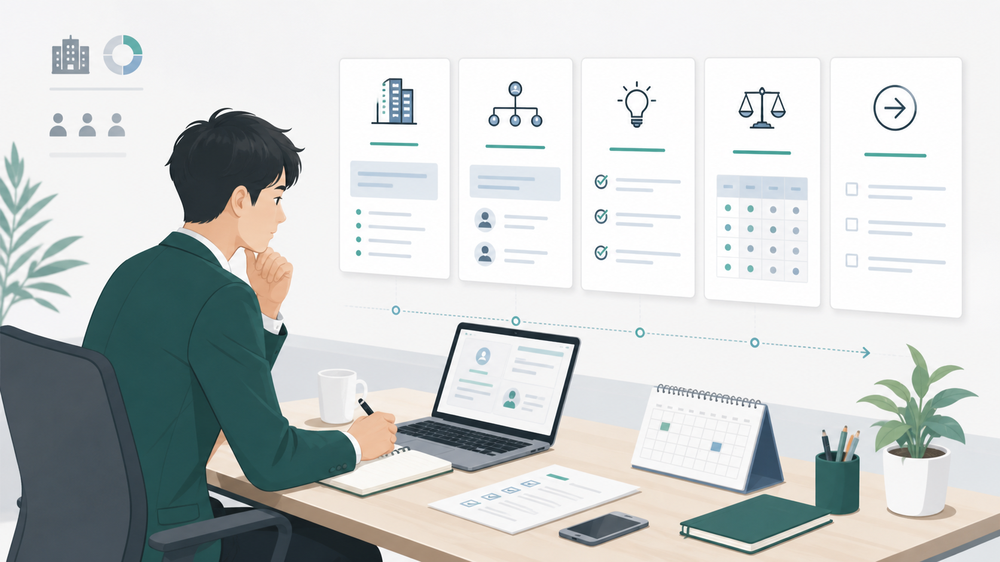
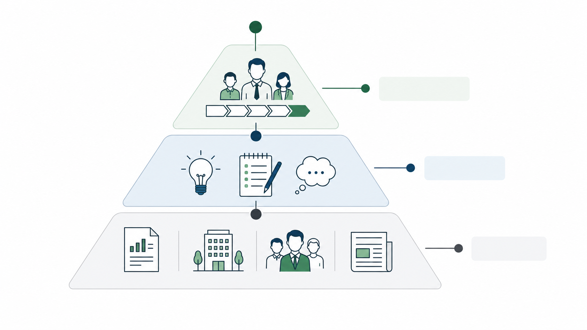
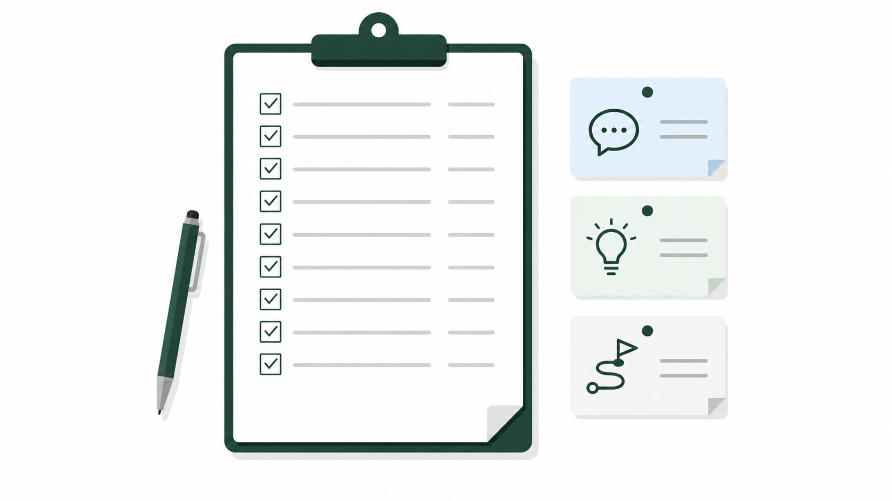
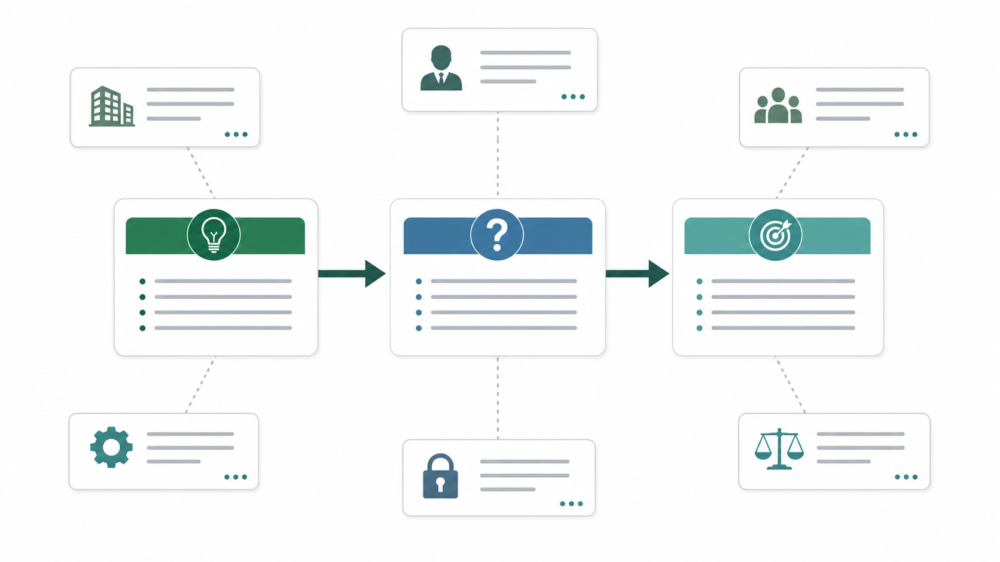

商談準備をAIで速くしたい、という相談は増えました。ただ現場でよく起きるのは、AIに「調べて」と投げたら会社概要とニュース要約が出てきて終わる、あるいは、ちゃんと調べたつもりなのに提案仮説や質問設計に繋がらず当日の会話が浅くなる、のどちらかです。
私はここを「情報が足りない」のではなく、見る順番がズレていることが多いと感じています。この記事では、商談準備で最初に見るべき顧客情報の優先順位と、AIの使いどころ（下準備）を、現場で回せる型にしてまとめます。

結論：会社概要より先に「意思決定の構造」と「今起きている変化」を見にいく
会社概要や沿革は大事です。ただ、商談準備の時間が限られているなら、私はまずここから見ます。
- 誰が、どういうプロセスで意思決定する会社か
- 今、何が変わっていて（変えたくて）、何がボトルネックか
- 相手が比較するとしたら、何を比較軸にしそうか
これが見えると質問が立ちます。質問が立つと、次アクションが設計できます。逆にニュース要約から入ると、情報は増えるのに会話が深くならないことが多いです。

なぜ会社概要の要約だけだと弱いのか（買い手側の変化）
買い手は、営業担当者に会う前に検討を進めています。Gartnerの発表でも、買い手が「営業担当者なしの購買体験」を好む傾向が示されています。
参考: Gartner press release (2025): https://www.gartner.com/en/newsroom/press-releases/2025-06-25-gartner-sales-survey-finds-61-percent-of-b2b-buyers-prefer-a-rep-free-buying-experience
この前提だと、商談の1回目は会社概要の説明では価値が出にくいです。相手が欲しいのは、状況に沿った課題の切り分け、比較軸、次に何を決めればいいかという意思決定の道筋になりやすい。だから準備でも、会社概要より先に意思決定の構造と変化に当たりにいく方が、会話が進みます。
まず見るべき顧客情報（私のおすすめ順）
1) 変化の兆し（トリガー）
最初に見るのは「何かが変わっている兆し」です。変化がない会社に、今すぐ買う理由は生まれにくいからです。プレスリリース、採用ページ、IR、公式ブログ、登壇資料などに出やすいので、まずここを拾います。
2) 何を成果とするか（評価指標）
次に「何が成果なのか」を仮置きします。ここが外れると提案がズレます。数字が分からなくても、評価軸の仮置きはできます。
3) 意思決定の形（誰が巻き込まれるか）
商談準備で一番効くのは、実はここだと思っています。現場の利用者、決裁者、実装/運用側（情シス、セキュリティ、法務など）。この3者の論点はズレるので、同じ提案でも「誰にどう刺すか」を先に設計します。
4) 現状のやり方（代替手段）
相手は必ず今も何かしらで回しています。Excel、既存SaaS、人の経験。ここを知らずに「AIで変わります」と言うと抽象になります。
5) 制約（やりたくてもできない理由）
制約は反論ではなく設計条件です。外部送信、審査、契約、体制。制約を先に仮置きできると、提案の骨格が作れます。
AIの使いどころ：出力を信じるのではなく「材料を揃える」ために使う
生成AIは便利ですが、もっともらしい誤情報を出しうる性質があります。だから私は、AIに任せるのは基本「下準備」までにしています。
参考: NIST Generative AI Profile (NIST AI 600-1): https://nvlpubs.nist.gov/nistpubs/ai/NIST.AI.600-1.pdf
- 公式ページ/IR/採用/プレスの収集 → 目次化
- 重要そうな箇所の抜き出し → URL付きでメモ化
- 論点の分類（変化/指標/意思決定/制約）→ たたき台
結論（この会社はこうだ）は人が置く。この分担にしておくと、AIを使っても事故りにくいです。
商談準備チェックリスト（10分で回す用）

- 直近の変化（トリガー）候補は何か
- その変化により起きそうな困りごとは何か
- 成果指標（何が良くなったら勝ちか）は何か
- 意思決定に巻き込まれそうな部門はどこか
- 現状の代替手段は何か（人/Excel/既存SaaS）
- 制約（外部送信/審査/契約/体制）は何がありそうか
- 比較軸になりそうなものは何か
- こちらが持ち込むべき仮説は何か（3つまで）
- 当日、必ず確認したい質問は何か（5つまで）
- 次アクションの候補は何か（持ち帰り事項を含む）
質問設計の型：仮説 → 質問 → 次アクション

商談準備は情報収集ではなく質問設計だと思っています。最後に必ず「仮説 → 質問 → 次アクション」の形に変換します。ここまで落ちると、商談が気持ちよく前に進む感覚になります。
まとめ：AIで速くするのは「要約」ではなく「準備の型」
AIは商談準備を速くできます。ただ、速くする対象が会社概要の要約だと、会話の質は上がりづらい。見る順番を「意思決定の構造」「変化」「比較軸」に寄せて、AIは材料集めに使う。この型にすると、短時間でも外しにくくなります。
新規開拓の前工程（ターゲット選定、企業調査、提案文のたたき台、アプローチ準備）をAIで仕組み化したい場合は、ValorizeAIのセールスAIのページも参考にしてみてください。